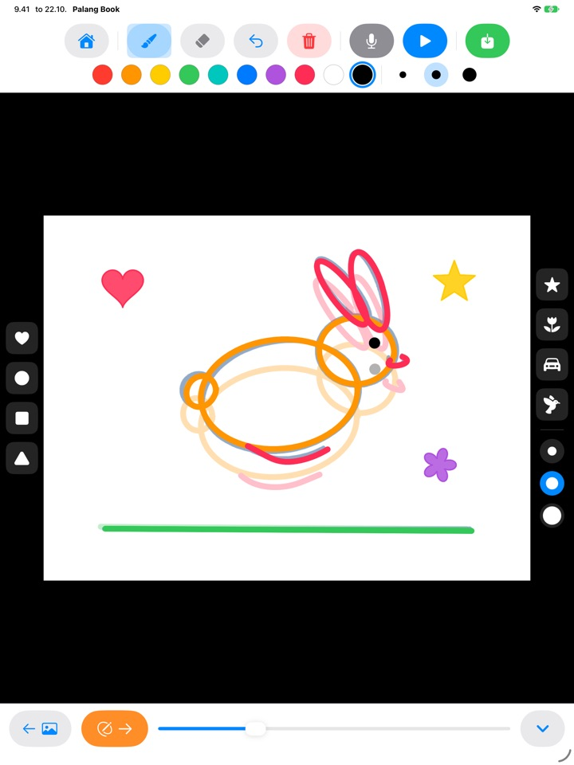
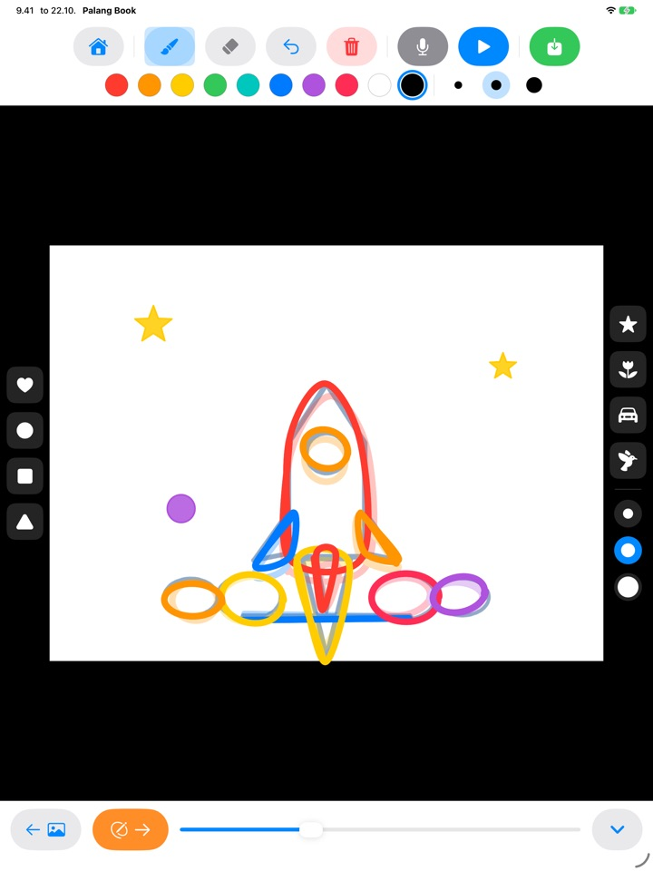
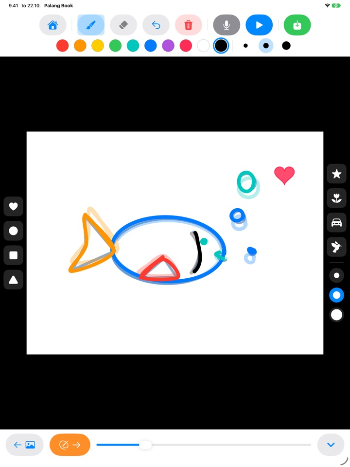
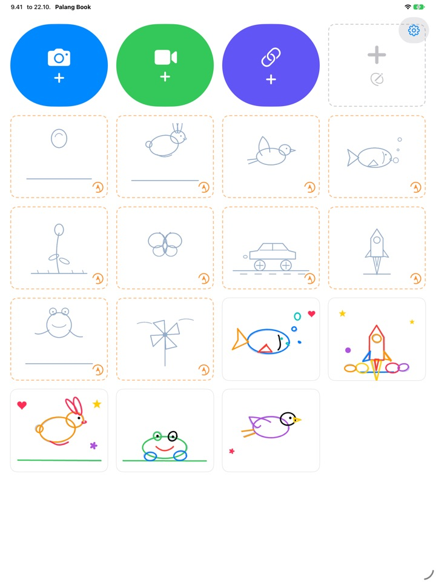

Jäljennä viivat,
niin kuva herää eloon
Lapsi jäljentää vaaleaa ääriviivaa sivu kerrallaan. Kun hän painaa toista, ääriviiva katoaa ja vain hänen omat viivansa liikkuvat. Jokainen painike on kuva, joten pienikin pärjää omin päin jo ennen kuin osaa lukea.
iPadille. Kolme jäljennyssarjaa on ilmaisia.

Piirrä muutama sivu
Piirrä jotain ja siirry seuraavalle sivulle oranssilla nuolella. Edellinen sivu näkyy himmeänä läpi. Kun sivuja on kaksi tai kolme, napauta sinistä toistopainiketta.
Eikö olisi sääli, jos hieno piirros jäisi paikalleen?
Animaatiossa piirretään lähes sama kuva yhä uudelleen pienin muutoksin, eikä lapsi yksin tiedä, mistä aloittaa. Palang Book antaa vaalean ääriviivan, johon liike on jo valmiiksi piirretty, joten lapsen tarvitsee vain seurata viivaa. Heti kun hän painaa toista, piirros liikkuu.
Seuraa viivaa, niin syntyy animaatio
Pomppiva pallo, hyppivä pupu, lentävä lintu, uiva kala, puhkeava kukka, perhonen, kilpa-auto, raketti, sammakko ja tuulimylly. Jokaisessa sarjassa on noin 20 sivua ääriviivoja.
Edellinen sivu näkyy himmeänä läpi, joten seuraavan piirtäminen on helppoa. Toistettaessa ääriviivat katoavat, ja vain lapsen oma piirros liikkuu.

Leimat ja kymmenen väriä
Napauta paperille sydämiä, ympyröitä, neliöitä, kolmioita, tähtiä, kukkia, autoja ja lintuja. Leimoja ja siveltimiä on kolmea kokoa, ja värejä on kymmenen.
Pyyhekumilla ja kumoa-painikkeella virheet korjaantuvat helposti. Piirtää voi sormella tai Apple Pencilillä.

Omien videoiden päälle tai tyhjälle paperille
Tuo itse kuvaamasi video tai video Kuvat-apista ja jäljennä sen päälle. Kun piilotat taustan, vain piirretyt kohtaukset toistuvat peräkkäin valkoisella paperilla. Mukana on myös tyhjä peukalokino kokonaan ilman ääriviivoja.
Napauta mikrofonia, niin lapsen ääni tallentuu mukaan. Valmiin teoksen voi tallentaa videona Kuviin ja jakaa perheelle.

Kolme askelta alkuun
- 1
Napauta ääriviivakorttia
Aloitusnäytön kortit, joissa on oranssi katkoviivareunus, ovat jäljennyssarjoja.
- 2
Piirrä ja käännä sivua
Oranssi nuoli vie seuraavalle sivulle.
- 3
Paina toista
Napauta sinistä toistopainiketta, niin piirros liikkuu.
Mitä painikkeet tekevät
- Oranssi katkoviivakortti
- Aloita jäljentäminen
- Harmaa katkoviivakortti
- Tyhjä peukalokino
- Sininen kamera
- Piirrä itse kuvaamasi videon päälle
- Vihreä video
- Tuo video Kuvat-apista
- Indigonsininen linkki
- Liitä linkki videotiedostoon
- Oranssi nuoli
- Seuraava sivu
- Sininen toisto
- Toista animaatio, uusi napautus pysäyttää
- Kaareva nuoli
- Kumoa viimeinen viiva
- Punainen roskakori
- Tyhjennä koko sivu (kumoa tuo sen takaisin)
- Mikrofoni
- Äänitä, kun animaatio pyörii silmukassa
- Videokuvake
- Piilota videotausta (vaaleanpunainen ja yliviivattu: vain piirrokset)
- Vihreä tallennus
- Tallenna videona Kuviin
Voit poistaa teoksen painamalla sen korttia pitkään aloitusnäytössä. Samalla poistuvat sen piirrokset, äänitys ja tuotu video.
Paljon kokeiltavaa ilmaiseksi. Elinikäinen käyttöoikeus, jos ihastutte.
Ilmainen
- 3 jäljennyssarjaa (pallo, pupu, kukka)
- 3 teosta tallessa
- 1 tuotu video
- Tyhjät peukalokinot enintään 10 sivua
- Äänitys enintään 15 sekuntia
- Leimat, värit, siveltimet ja tallennus Kuviin
Elinikäinen käyttöoikeus
- Kaikki jäljennyssarjat, myös tulevat
- Ei rajoja teoksille, sivuille, videoille eikä äänitysajalle
- Ei Palang Book -korttia tallennettujen videoiden lopussa
Kertaostos, ei tilaus. Perhejaon ansiosta se toimii jokaisella perheen iPadilla.
Ilmaiseksi tallennetut videot päättyvät lyhyeen Palang Book -korttiin. Jos käytit Palang Bookia jo ennen Elinikäistä käyttöoikeutta, kaikki on sinulle jo avattu.
Kysymyksiä
Miten ääriviivat toimivat?
Vaaleansiniset viivat ovat ääriviiva. Lapsi jäljentää niiden päälle, ja kun painat toista, ääriviiva katoaa ja vain lapsen viivat liikkuvat. Kun noin 20 sivua on piirretty, animaatio on valmis.
Haluan toistaa ja tallentaa pelkän piirroksen ilman videota.
Napauta videoprojektissa yläreunan työkalupalkin videokuvaketta niin, että se muuttuu vaaleanpunaiseksi ja yliviivatuksi. Silloin toistossa ja tallennuksessa näkyy vain piirros valkoisella taustalla. Vain piirretyt kohtaukset toistetaan, joten muutamasta piirroksesta pitkän videon päällä syntyy lyhyt animaatio.
Minne valmis video tallentuu?
Napauta työkalupalkin oikeassa reunassa olevaa vihreää tallennuspainiketta, niin mp4-video tallentuu Kuviin. Salli pääsy Kuviin ensimmäisellä tallennuskerralla.
Miten lisään äänen?
Napauta mikrofonipainiketta, niin ääni tallentuu animaation pyöriessä silmukassa. Lopeta napauttamalla pysäytyspainiketta. Uusi äänitys korvaa vanhan. Ääni tulee mukaan, kun tallennat videon.
Videolinkki ei avaudu.
Tarkista internetyhteys ja varmista, että osoite vie suoraan videotiedostoon (esimerkiksi .mp4-päätteiseen). Videonjakopalvelujen sivulinkkejä ei voi avata. Käytäthän omia videoitasi tai videoita, joita saa vapaasti käyttää.
Kämmen jättää jatkuvasti jälkiä.
Kaareva nuoli poistaa viimeisen viivan, ja punainen roskakori tyhjentää koko sivun (kumoa tuo sen takaisin). Jos tätä tapahtuu usein, lähetä meille sähköpostia, niin autamme.
Miksi ennen ostonäkymää tulee laskutehtävä?
Jotta lapsi ei pääse ostonäkymään omin päin. Kun lapsi napauttaa jotain lukittua, näkyviin tulee iso lukko ja kehotus näyttää se aikuiselle. Ostonäkymä aukeaa vasta, kun aikuinen vastaa kertolaskuun.
Miten palautan ostokseni?
Napauta aloitusnäytön oikean yläkulman hammasratasta, valitse Elinikäinen käyttöoikeus, vastaa aikuisen kysymykseen ja napauta Palauta ostokset. Sinun on oltava kirjautuneena samalla Apple-tilillä, jolla teit oston.
Miten lähetän palautetta apista?
Napauta aloitusnäytön hammasratasta ja valitse Lähetä palautetta. Voit liittää mukaan kuvakaappauksen ja jättää nimen ja sähköpostiosoitteen, jos haluat vastauksen. Toivomme, että palautteen lähettää vanhempi.
Keräättekö tietoja lapsestani?
Emme. Palang Book ei kerää mitään henkilötietoja, ja piirrokset ja äänitykset pysyvät iPadillasi. Lisätietoja on tietosuojakäytännössä.
Kysyttävää tai ongelmia? Lähetä sähköpostia osoitteeseen mizzking75@gmail.com. Vastaamme yleensä 2–3 päivän kuluessa.